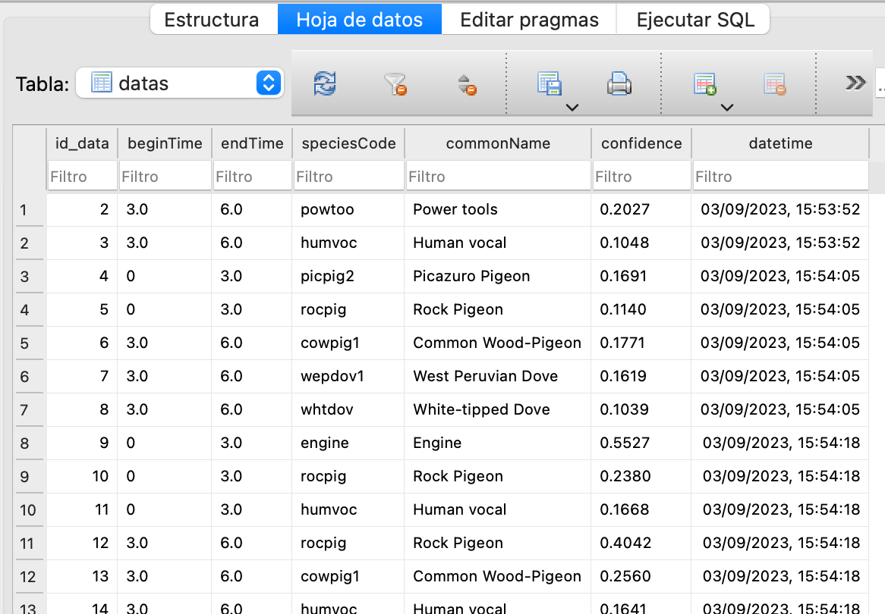

Gráficas de los datos extraidos de los análisis del modelo

A continuación mostramos una gráfica de linea donde podemos ver los análisis realizados por la aplicación que se obtuvieron en distintas fechas y horas
Procedemos a la muestra una gráfica de tipo tarta con los registros de las aves del sistema.